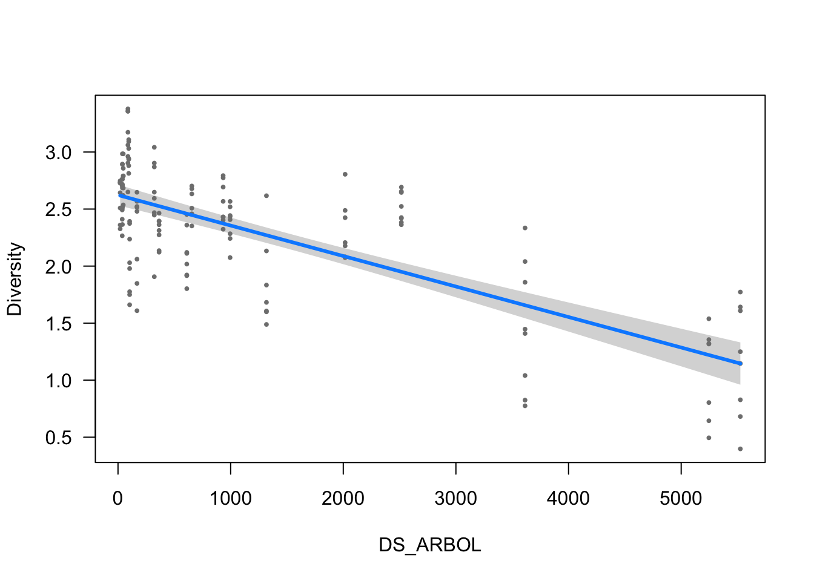
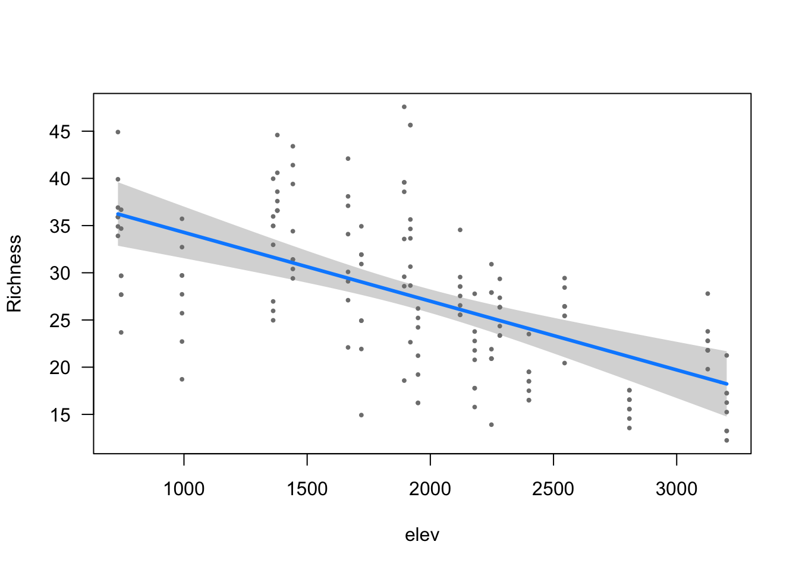
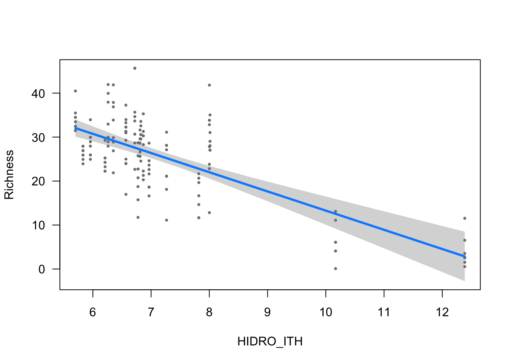
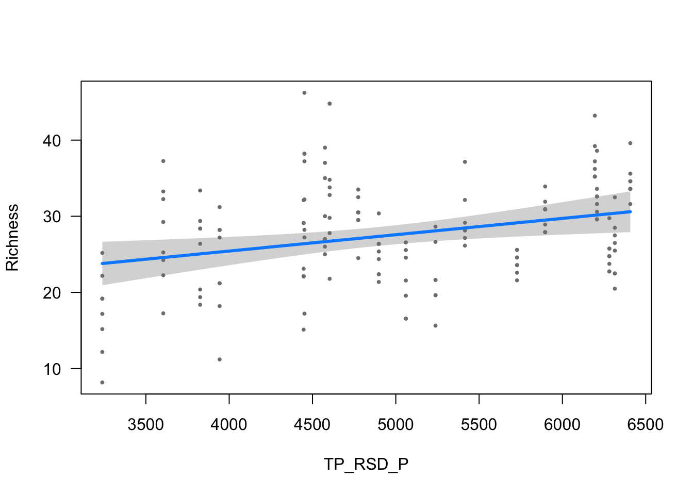

modeliza
ajpelu
2022-01-27
Last updated: 2022-01-30
Checks: 7 0
Knit directory: ms_mariposas_biodiversity/
This reproducible R Markdown analysis was created with workflowr (version 1.7.0). The Checks tab describes the reproducibility checks that were applied when the results were created. The Past versions tab lists the development history.
Great! Since the R Markdown file has been committed to the Git repository, you know the exact version of the code that produced these results.
Great job! The global environment was empty. Objects defined in the global environment can affect the analysis in your R Markdown file in unknown ways. For reproduciblity it’s best to always run the code in an empty environment.
The command set.seed(20211228) was run prior to running the code in the R Markdown file. Setting a seed ensures that any results that rely on randomness, e.g. subsampling or permutations, are reproducible.
Great job! Recording the operating system, R version, and package versions is critical for reproducibility.
Nice! There were no cached chunks for this analysis, so you can be confident that you successfully produced the results during this run.
Great job! Using relative paths to the files within your workflowr project makes it easier to run your code on other machines.
Great! You are using Git for version control. Tracking code development and connecting the code version to the results is critical for reproducibility.
The results in this page were generated with repository version b29b528. See the Past versions tab to see a history of the changes made to the R Markdown and HTML files.
Note that you need to be careful to ensure that all relevant files for the analysis have been committed to Git prior to generating the results (you can use wflow_publish or wflow_git_commit). workflowr only checks the R Markdown file, but you know if there are other scripts or data files that it depends on. Below is the status of the Git repository when the results were generated:
Ignored files:
Ignored: .Rhistory
Ignored: .Rproj.user/
Unstaged changes:
Modified: data/mod_den_selectionBIC.csv
Modified: data/mod_riq_selectionBIC.csv
Modified: glmulti.analysis.modgen.back
Modified: glmulti.analysis.mods.back
Note that any generated files, e.g. HTML, png, CSS, etc., are not included in this status report because it is ok for generated content to have uncommitted changes.
These are the previous versions of the repository in which changes were made to the R Markdown (analysis/modeliza.Rmd) and HTML (docs/modeliza.html) files. If you’ve configured a remote Git repository (see ?wflow_git_remote), click on the hyperlinks in the table below to view the files as they were in that past version.
| File | Version | Author | Date | Message |
|---|---|---|---|---|
| Rmd | b29b528 | ajpelu | 2022-01-30 | add equations |
| Rmd | 04d5a3b | ajpelu | 2022-01-28 | modelling |
| html | 04d5a3b | ajpelu | 2022-01-28 | modelling |
library(tidyverse)
library(readxl)
library(janitor)
library(here)
library(correlation)
library(patchwork)
library(vegan)
library(glmulti)
library(DHARMa)
library(MuMIn)
library(performance)
library(tweedie)
library(kableExtra)
library(visreg)
library(tab)
library(MASS)
library(equatiomatic)
library(report)Introduction
Prepara datos
- De las variables climáticas según nuestra selección previa tenemos:
variables_sel <- c("Pp_anu", "TP_PEND", "FR_MATDE",
"TP_SU_NO", "FR_QUERC", "FR_CONIF",
"TP_RSH_V", "HIDRO_ITH", "temp_anu",
"TP_RSD_P", "Pp_ver", "TP_ES_OE", "TP_EXPO",
"DS_ARBOL", "elev")- Por tanto de las variables climáticas anuales solo cogeré: Pp_anu, t_anual, Pp_ver
diversidad_year <- read_csv(here::here("data/diversidad_by_year.csv"))
riqueza_year <- read_csv(here::here("data/riqueza_by_year.csv"))
densidad_year <- read_csv(here::here("data/densidad_by_year.csv"))
env <- read_csv(here::here("data/matrix_env_variables_selected.csv")) %>%
dplyr::select(-elev, -temp_anu, -Pp_ver, -Pp_anu)
climate_year <- read_csv(here::here("data/climate_year.csv")) %>%
dplyr::select(Id_transect, year, p_anu_year, p_ver_year, t_anu_year = t_anual)
m <- riqueza_year %>%
inner_join(diversidad_year) %>%
inner_join(densidad_year) %>%
dplyr::select(-longitud, -min_altitu, -max_altitu, -long_total, -abundancia) %>%
unite("id", c("id_transecto", "year")) %>%
inner_join(
(climate_year %>% unite("id", c("Id_transect", "year"), remove = FALSE)),
by="id") %>%
inner_join(env) %>%
rowwise() %>%
mutate(FR_ARBOL = sum(FR_CONIF, FR_QUERC)) %>%
rename(div = diversidad) %>%
relocate(transecto, id, Id_transect, site, elev,year) %>%
dplyr::select(-Transecto, -Abreviatura)Exploración y selección de variables
Correlaciones
co <- correlation((m %>% dplyr::select(p_anu_year:FR_ARBOL)))
co %>% summary() %>%
plot(size_point = .5,
show_values = TRUE,
show_p = TRUE,
show_legend = FALSE,
size_text = 3.5) +
theme(axis.text = element_text(size = 8))Warning: Removed 91 rows containing missing values (geom_point).
| Version | Author | Date |
|---|---|---|
| 04d5a3b | ajpelu | 2022-01-28 |
Evaluar variables de arbolado
Creamos una variable llamada FR_ARBOL = FR_CONIF + FR_QUERC
Analizar correlación entre variables
- FR_CONIF y FR_QUERC (r = -0.1884633)
- FR_CONIF y DS_ARBOL (r = -0.5334323)
- FR_QUERC y DS_ARBOL (r = -0.366733)
- FR_ARBOL y DS_ARBOL (r = -0.7147883)
- Evaluar relación entre variables:
theme_set(theme_bw())
(m %>% ggplot(aes(x=DS_ARBOL, y=FR_ARBOL)) + geom_point()) +
(m %>% ggplot(aes(x=DS_ARBOL, y=FR_QUERC)) + geom_point()) +
(m %>% ggplot(aes(x=DS_ARBOL, y=FR_CONIF)) + geom_point())
| Version | Author | Date |
|---|---|---|
| 04d5a3b | ajpelu | 2022-01-28 |
En caso de querer dejar alguna variable de arbolado, dejaríamos la FR_ARBOL, pero esta variable está muy correlacionada con DS_ARBOL (\(r > |.7|\)), por lo tanto, nos quedamos con DS_ARBOL y descartamos FR_QUERC y FR_CONIF.
Evaluar variables de gradientes topográficos
- Las variables TP_RSD_P y TP_SU_NO están muy correlacionadas (r = -0.9459845)
(m %>% ggplot(aes(x=TP_RSD_P, y=TP_SU_NO)) + geom_point())
| Version | Author | Date |
|---|---|---|
| 04d5a3b | ajpelu | 2022-01-28 |
Elegimos a TP_RSD_P, por ser una varible de mayor sentido biológico (cantidad de radiación que recibe)
Analizamos ahora TP_PEND. Esta variable aparece muy correlacionada con HIDRO_ITH (r = -0.6925104) y con TP_RSH_V (r = -0.6747214), aunque valores muy cercanos a <|.7|. Puede ser buena idea descartar TP_PEND.
Evaluar elevación
- La elevación presenta alta correlación con la t_anual_year (r = -0.8056942).
- Asímismo, la elevación presenta una correlación cercana al umbral (|.7|) con DS_ARBOL (r = 0.5965598) y con HIDRO_ITH (r = -0.6394274).
- Sin embargo, la elevación a priori es una covariable que nos interesa mantener, por lo que descartamos t_anu_year.
theme_set(theme_bw())
(m %>% ggplot(aes(x=elev, y=t_anu_year)) + geom_point()) +
(m %>% ggplot(aes(x=elev, y=DS_ARBOL)) + geom_point()) +
(m %>% ggplot(aes(x=elev, y=HIDRO_ITH)) + geom_point())
| Version | Author | Date |
|---|---|---|
| 04d5a3b | ajpelu | 2022-01-28 |
Evaluar VIF
myvars <- m %>%
dplyr::select(-transecto, -id, -Id_transect, -site, -year,
-riq, -div, -den,
-t_anu_year, -FR_QUERC, -FR_CONIF,
-TP_SU_NO) %>% names()
corvif(m[,myvars])
Variance inflation factors
GVIF
elev 5.353464
p_anu_year 1.210317
p_ver_year 1.187311
TP_PEND 18.681484
FR_MATDE 2.360937
TP_RSH_V 5.410423
HIDRO_ITH 9.707477
TP_RSD_P 5.095531
TP_ES_OE 1.726852
TP_EXPO 4.495690
DS_ARBOL 8.592039
FR_ARBOL 4.955440Efectivamente vemos altos valores de VIF para TP_PEND (la descartamos)
myvars <- m %>%
dplyr::select(-transecto, -id, -Id_transect, -site, -year,
-riq, -div, -den,
-t_anu_year, -FR_QUERC, -FR_CONIF,
-TP_SU_NO, -TP_PEND) %>% names()
corvif(m[,myvars])
Variance inflation factors
GVIF
elev 5.291071
p_anu_year 1.181742
p_ver_year 1.179339
FR_MATDE 2.289574
TP_RSH_V 2.717009
HIDRO_ITH 3.024327
TP_RSD_P 2.345438
TP_ES_OE 1.639223
TP_EXPO 4.495657
DS_ARBOL 7.108273
FR_ARBOL 3.415775La siguente candidata a eliminar es DS_ARBOL, aunque dependerá del umbral que seleccionemos. Algunos autores hablan de VIF < 3, otros VIF < 5 y otros de VIF < 10. No obstante, antes vemos la posible relación con FR_ARBOL (r = -0.7147883), que es una variable derivada (combinada de FR_CONIF y FR_QUERC). Proponemos descartar FR_ARBOL.
myvars <- m %>%
dplyr::select(-transecto, -id, -Id_transect, -site, -year,
-riq, -div, -den,
-elev, -FR_QUERC, -FR_CONIF,
-TP_SU_NO, -TP_PEND, -FR_ARBOL) %>% names()
corvif(m[,myvars])
Variance inflation factors
GVIF
p_anu_year 1.172146
p_ver_year 1.190897
t_anu_year 2.196946
FR_MATDE 2.076348
TP_RSH_V 2.657142
HIDRO_ITH 2.290738
TP_RSD_P 2.167037
TP_ES_OE 1.625434
TP_EXPO 3.807454
DS_ARBOL 2.652751Por tanto tenemos seleccionadas las siguientes variables:
m %>%
dplyr::select(-transecto, -id, -Id_transect, -site, -year,
-riq, -div, -den,
-t_anu_year, -FR_QUERC, -FR_CONIF,
-TP_SU_NO, -TP_PEND, -FR_ARBOL) %>% names() [1] "elev" "p_anu_year" "p_ver_year" "FR_MATDE" "TP_RSH_V"
[6] "HIDRO_ITH" "TP_RSD_P" "TP_ES_OE" "TP_EXPO" "DS_ARBOL" nobs_var <- nrow(m)/
ncol(m %>%
dplyr::select(-transecto, -id, -Id_transect, -site, -year,
-riq, -div, -den,
-t_anu_year, -FR_QUERC, -FR_CONIF,
-TP_SU_NO, -TP_PEND, -FR_ARBOL))Algunos hablan de tener entre 15 - 25 veces el numero de observaciones por cada covariable. Actualmente tenemos 15.6
Modelo de Densidad
- Explorar densidad frente a todas las variables
theme_set(theme_bw())
m %>%
pivot_longer(p_anu_year:FR_ARBOL) %>%
ggplot(aes(x=value, y=den)) +
geom_point() + geom_smooth() +
facet_wrap(~name, scales = "free_x")
| Version | Author | Date |
|---|---|---|
| 04d5a3b | ajpelu | 2022-01-28 |
# Define formula
fden <- as.formula(
paste("den",
paste(
names(
m %>% dplyr::select(-transecto, -id, -Id_transect, -site, -year,
-riq, -div, -den,
-t_anu_year, -FR_QUERC, -FR_CONIF,
-TP_SU_NO, -TP_PEND, -FR_ARBOL)), collapse = "+"),
sep = "~")
)fdenden ~ elev + p_anu_year + p_ver_year + FR_MATDE + TP_RSH_V +
HIDRO_ITH + TP_RSD_P + TP_ES_OE + TP_EXPO + DS_ARBOLAproximación modelo GLM
- Probamos con varias familias, y optamos por Gamma
# Probamos varias familias, entre ellas Tweedie
library(statmod)
library(tweedie)
profile1 <- tweedie.profile(den ~ 1 + FR_MATDE + HIDRO_ITH + DS_ARBOL, data = m, p.vec = seq(1.1, 3.0, 0.1), fit.glm = TRUE)
print(profile1$p.max)# automatic model selection
set.seed(1234)
# fam <- "poisson"
# fam <- "gaussian"
fam <- "gamma"
select_fden <- glmulti(fden, data = m,
level= 1,
chunk = 1, chunks = 4,
method = "ga", crit = "bic",
family = Gamma(link ="log"),
marginality = TRUE,
confsetsize = 5,
plotty = FALSE, report = FALSE)TASK: Genetic algorithm in the candidate set.
Initialization...
Algorithm started...
Improvements in best and average IC have bebingo en below the specified goals.
Algorithm is declared to have converged.
Completed.fden1 <- glm(select_fden@formulas[[1]],
family = Gamma(link ="log"), data = m)
fden2 <- glm(select_fden@formulas[[2]],
family = Gamma(link ="log"), data = m)
fden3 <- glm(select_fden@formulas[[3]],
family = Gamma(link ="log"), data = m)
fden4 <- glm(select_fden@formulas[[4]],
family = Gamma(link ="log"), data = m)
fden5 <- glm(select_fden@formulas[[5]],
family = Gamma(link ="log"), data = m)- Generar tabla de top five modelos
top5_table_fden <- as.data.frame(model.sel(fden1, fden2, fden3, fden4, fden5, rank = BIC)) %>%
dplyr::select(-family) %>%
mutate(model =
c(fden1$formula, fden2$formula, fden3$formula, fden4$formula, fden5$formula)) %>%
relocate(model)
write.csv(as.matrix(top5_table_fden), file=here::here("data/mod_den_selectionBIC.csv"))### Model validation
performance::check_model(fden1) Warning: `guides(<scale> = FALSE)` is deprecated. Please use `guides(<scale> =
"none")` instead.
| Version | Author | Date |
|---|---|---|
| 04d5a3b | ajpelu | 2022-01-28 |
- GOF
performance(fden1) %>%
kbl() %>%
kable_styling()| AIC | BIC | R2_Nagelkerke | RMSE | Sigma |
|---|---|---|---|---|
| 511.9234 | 527.1727 | 0.727684 | 1.642396 | 0.4541641 |
Modelo seleccionado
select_fden@formulas[[1]]den ~ 1 + FR_MATDE + HIDRO_ITH + DS_ARBOL
<environment: 0x7fbfde2956c8>modelo_densidad <- glm(den ~ 1 + FR_MATDE + HIDRO_ITH + DS_ARBOL,
family = Gamma(link ="log"), data = m)Visualización
ytitle <- "Density"
visreg(modelo_densidad, scale="response", partial=TRUE,
ylab = ytitle, "FR_MATDE", xlab = "FR_MATDE")
| Version | Author | Date |
|---|---|---|
| 04d5a3b | ajpelu | 2022-01-28 |
visreg(modelo_densidad, scale="response", partial=TRUE,
ylab = ytitle, "DS_ARBOL", xlab = "DS_ARBOL")
| Version | Author | Date |
|---|---|---|
| 04d5a3b | ajpelu | 2022-01-28 |
visreg(modelo_densidad, scale="response", partial=TRUE,
"HIDRO_ITH", xlab = "HIDRO_ITH")
| Version | Author | Date |
|---|---|---|
| 04d5a3b | ajpelu | 2022-01-28 |
Parámetros
ms <- modelo_densidad
tc <- tab::tabglm(ms, columns = c("beta.se", "test", "p"), decimals = 4)
names(tc) <- c("Variable", "Estimate", "Zvalue", "pvalue")
tablita_auxiliar <- data.frame(
Variable = c("DegreeFreedom", "AIC", "BIC", "DevianceExplained"),
Estimate = as.character(c(df.residual(ms), round(AIC(ms),0), round(BIC(ms), 0),
round( ((ms$null.deviance - ms$deviance) / ms$null.deviance),3))),
Zvalue = "", pvalue = "")
tc <- bind_rows(tc, tablita_auxiliar)
write.csv(tc, here::here("data/mod_den_coefficients.csv"))tc %>% kbl() %>% kable_styling()| Variable | Estimate | Zvalue | pvalue |
|---|---|---|---|
| Intercept | 0.6159 (0.2048) | 3.0067 | 0.003 |
| FR_MATDE | 0.0243 (0.0032) | 7.5854 | <0.001 |
| HIDRO_ITH | 0.0802 (0.0256) | 3.1338 | 0.002 |
| DS_ARBOL | -0.0003 (0.0000) | -12.8372 | <0.001 |
| DegreeFreedom | 152 | ||
| AIC | 512 | ||
| BIC | 527 | ||
| DevianceExplained | 0.664 |
extract_eq(modelo_densidad, wrap = TRUE, intercept = "beta", use_coefs = TRUE)\[ \begin{aligned} \log ({ \widehat{E( \operatorname{den} )} }) &= 0.62 + 0.02(\operatorname{FR\_MATDE}) + 0.08(\operatorname{HIDRO\_ITH}) + 0(\operatorname{DS\_ARBOL}) \end{aligned} \]
report::report(modelo_densidad)We fitted a general linear model (Gamma family with a log link) (estimated using ML) to predict den with FR_MATDE, HIDRO_ITH and DS_ARBOL (formula: den ~ 1 + FR_MATDE + HIDRO_ITH + DS_ARBOL). The model's explanatory power is substantial (Nagelkerke's R2 = 0.73). The model's intercept, corresponding to FR_MATDE = 0, HIDRO_ITH = 0 and DS_ARBOL = 0, is at 0.62 (95% CI [0.21, 1.01], t(152) = 3.01, p = 0.003). Within this model:
- The effect of FR_MATDE is statistically significant and positive (beta = 0.02, 95% CI [0.02, 0.03], t(152) = 7.59, p < .001; Std. beta = 0.31, 95% CI [0.23, 0.40])
- The effect of HIDRO_ITH is statistically significant and positive (beta = 0.08, 95% CI [0.03, 0.13], t(152) = 3.13, p = 0.002; Std. beta = 0.12, 95% CI [0.05, 0.20])
- The effect of DS_ARBOL is statistically significant and negative (beta = -3.14e-04, 95% CI [-3.62e-04, -2.64e-04], t(152) = -12.84, p < .001; Std. beta = -0.53, 95% CI [-0.61, -0.45])
Standardized parameters were obtained by fitting the model on a standardized version of the dataset. 95% Confidence Intervals (CIs) and p-values were computed using Modelo de Diversidad
- Explorar diversidad frente a todas las variables
theme_set(theme_bw())
m %>%
pivot_longer(p_anu_year:FR_ARBOL) %>%
ggplot(aes(x=value, y=div)) +
geom_point() + geom_smooth() +
facet_wrap(~name, scales = "free_x")Warning: Removed 15 rows containing non-finite values (stat_smooth).Warning: Removed 15 rows containing missing values (geom_point).# Define formula
fdiv <- as.formula(
paste("div",
paste(
names(
m %>% dplyr::select(-transecto, -id, -Id_transect, -site, -year,
-riq, -div, -den,
-t_anu_year, -FR_QUERC, -FR_CONIF,
-TP_SU_NO, -TP_PEND, -FR_ARBOL,
-TP_EXPO, -p_anu_year, -p_ver_year)), collapse = "+"),
sep = "~")
)fdivdiv ~ elev + FR_MATDE + TP_RSH_V + HIDRO_ITH + TP_RSD_P + TP_ES_OE +
DS_ARBOLAproximación modelo GLM
- Probamos con varias familias, y optamos por Gaussian
- Ojo, he quitado TP_EXPO, p_anu_year, p_ver_year por valores altos de vif según performance::check_model
# automatic model selection
set.seed(1234)
# fam <- "poisson"
fam <- "gaussian"
select_fdiv <- glmulti(fdiv, data = m,
level= 1,
chunk = 1, chunks = 4,
method = "ga", crit = "bic",
family = fam,
marginality = TRUE,
confsetsize = 5,
plotty = FALSE, report = FALSE)TASK: Genetic algorithm in the candidate set.
Initialization...
Algorithm started...
Improvements in best and average IC have bebingo en below the specified goals.
Algorithm is declared to have converged.
Completed.fdiv1 <- glm(select_fdiv@formulas[[1]], data = m)
fdiv2 <- glm(select_fdiv@formulas[[2]], data = m)
fdiv3 <- glm(select_fdiv@formulas[[3]], data = m)
fdiv4 <- glm(select_fdiv@formulas[[4]], data = m)
fdiv5 <- glm(select_fdiv@formulas[[5]], data = m)- Generar tabla de top five modelos
top5_table_fdiv <- as.data.frame(model.sel(fdiv1, fdiv2, fdiv3, fdiv4, fdiv5, rank = BIC)) %>%
dplyr::select(-family) %>%
mutate(model =
c(fdiv1$formula, fdiv2$formula, fdiv3$formula,
fdiv4$formula, fdiv5$formula)) %>%
relocate(model)
write.csv(as.matrix(top5_table_fdiv), file=here::here("data/mod_div_selectionBIC.csv"))### Model validation
- Eligo modelo 2, no hay casi diferencias y tiene menos params.
performance::check_model(fdiv2) Warning: `guides(<scale> = FALSE)` is deprecated. Please use `guides(<scale> =
"none")` instead.- GOF
performance(fdiv2) %>%
kbl() %>%
kable_styling()| AIC | BIC | R2 | RMSE | Sigma |
|---|---|---|---|---|
| 148.2462 | 166.5067 | 0.7374419 | 0.3755233 | 0.3817307 |
Modelo seleccionado
select_fdiv@formulas[[2]]div ~ 1 + FR_MATDE + HIDRO_ITH + TP_ES_OE + DS_ARBOL
<environment: 0x7fbff98918c0>modelo_diversidad <- glm(div ~ 1 + FR_MATDE + HIDRO_ITH + TP_ES_OE + DS_ARBOL, data = m)Visualización
ytitle <- "Diversity"
visreg(modelo_diversidad, scale="response", partial=TRUE,
ylab = ytitle, "FR_MATDE", xlab = "FR_MATDE")visreg(modelo_diversidad, scale="response", partial=TRUE,
ylab = ytitle, "HIDRO_ITH", xlab = "HIDRO_ITH")visreg(modelo_diversidad, scale="response", partial=TRUE,
ylab = ytitle, "TP_ES_OE", xlab = "TP_ES_OE")
visreg(modelo_diversidad, scale="response", partial=TRUE,
ylab = ytitle, "DS_ARBOL", xlab = "DS_ARBOL")
Parámetros
ms <- modelo_diversidad
tc <- tab::tabglm(ms, columns = c("beta.se", "test", "p"), decimals = 4)
names(tc) <- c("Variable", "Estimate", "Zvalue", "pvalue")
tablita_auxiliar <- data.frame(
Variable = c("DegreeFreedom", "AIC", "BIC", "DevianceExplained"),
Estimate = as.character(c(df.residual(ms), round(AIC(ms),0), round(BIC(ms), 0),
round( ((ms$null.deviance - ms$deviance) / ms$null.deviance),3))),
Zvalue = "", pvalue = "")
tc <- bind_rows(tc, tablita_auxiliar)
write.csv(tc, here::here("data/mod_div_coefficients.csv"))tc %>% kbl() %>% kable_styling()| Variable | Estimate | Zvalue | pvalue |
|---|---|---|---|
| Intercept | 3.7419 (0.1920) | 19.4891 | <0.001 |
| FR_MATDE | 0.0242 (0.0028) | 8.5998 | <0.001 |
| HIDRO_ITH | -0.1417 (0.0212) | -6.6774 | <0.001 |
| TP_ES_OE | -0.0081 (0.0019) | -4.2891 | <0.001 |
| DS_ARBOL | -0.0002 (0.0000) | -10.6152 | <0.001 |
| DegreeFreedom | 150 | ||
| AIC | 148 | ||
| BIC | 167 | ||
| DevianceExplained | 0.737 |
extract_eq(modelo_diversidad, wrap = TRUE, intercept = "beta", use_coefs = TRUE)\[ \begin{aligned} \widehat{E( \operatorname{div} )} &= 3.74 + 0.02(\operatorname{FR\_MATDE}) - 0.14(\operatorname{HIDRO\_ITH}) - 0.01(\operatorname{TP\_ES\_OE})\ + \\ &\quad 0(\operatorname{DS\_ARBOL}) \end{aligned} \]
report::report(modelo_diversidad)We fitted a linear model (estimated using ML) to predict div with FR_MATDE, HIDRO_ITH, TP_ES_OE and DS_ARBOL (formula: div ~ 1 + FR_MATDE + HIDRO_ITH + TP_ES_OE + DS_ARBOL). The model's explanatory power is substantial (R2 = 0.74). The model's intercept, corresponding to FR_MATDE = 0, HIDRO_ITH = 0, TP_ES_OE = 0 and DS_ARBOL = 0, is at 3.74 (95% CI [3.37, 4.12], t(150) = 19.49, p < .001). Within this model:
- The effect of FR_MATDE is statistically significant and positive (beta = 0.02, 95% CI [0.02, 0.03], t(150) = 8.60, p < .001; Std. beta = 0.42, 95% CI [0.33, 0.52])
- The effect of HIDRO_ITH is statistically significant and negative (beta = -0.14, 95% CI [-0.18, -0.10], t(150) = -6.68, p < .001; Std. beta = -0.29, 95% CI [-0.37, -0.20])
- The effect of TP_ES_OE is statistically significant and negative (beta = -8.07e-03, 95% CI [-0.01, -4.38e-03], t(150) = -4.29, p < .001; Std. beta = -0.20, 95% CI [-0.29, -0.11])
- The effect of DS_ARBOL is statistically significant and negative (beta = -2.33e-04, 95% CI [-2.76e-04, -1.90e-04], t(150) = -10.62, p < .001; Std. beta = -0.53, 95% CI [-0.63, -0.43])
Standardized parameters were obtained by fitting the model on a standardized version of the dataset. 95% Confidence Intervals (CIs) and p-values were computed using Modelo de Riqueza
- Explorar riqueza frente a todas las variables
theme_set(theme_bw())
m %>%
pivot_longer(p_anu_year:FR_ARBOL) %>%
ggplot(aes(x=value, y=riq)) +
geom_point() + geom_smooth() +
facet_wrap(~name, scales = "free_x")# Define formula
friq <- as.formula(
paste("riq",
paste(
names(
m %>% dplyr::select(-transecto, -id, -Id_transect, -site, -year,
-riq, -div, -den,
-t_anu_year, -FR_QUERC, -FR_CONIF,
-TP_SU_NO, -TP_PEND, -FR_ARBOL,
-p_anu_year, -p_ver_year)), collapse = "+"),
sep = "~")
)friqriq ~ elev + FR_MATDE + TP_RSH_V + HIDRO_ITH + TP_RSD_P + TP_ES_OE +
TP_EXPO + DS_ARBOLAproximación modelo GLM
- Probamos con varias familias, y optamos por Gamma
# automatic model selection
set.seed(1234)
# fam <- "poisson"
fam <- "gaussian"
select_friq <- glmulti(friq, data = m,
level= 1,
chunk = 1, chunks = 4,
method = "ga", crit = "bic",
family = fam,
marginality = TRUE,
confsetsize = 5,
plotty = FALSE, report = FALSE)TASK: Genetic algorithm in the candidate set.
Initialization...
Algorithm started...
Improvements in best and average IC have bebingo en below the specified goals.
Algorithm is declared to have converged.
Completed.friq1 <- glm(select_friq@formulas[[1]], data = m)
friq2 <- glm(select_friq@formulas[[2]], data = m)
friq3 <- glm(select_friq@formulas[[3]], data = m)
friq4 <- glm(select_friq@formulas[[4]], data = m)
friq5 <- glm(select_friq@formulas[[5]], data = m)- Generar tabla de top five modelos
top5_table_friq <- as.data.frame(model.sel(friq1, friq2, friq3, friq4, friq5, rank = BIC)) %>%
dplyr::select(-family) %>%
mutate(model =
c(friq1$formula, friq3$formula, friq3$formula, friq4$formula, friq5$formula)) %>%
relocate(model)
write.csv(as.matrix(top5_table_friq), file=here::here("data/mod_riq_selectionBIC.csv"))### Model validation
performance::check_model(friq1) Warning: `guides(<scale> = FALSE)` is deprecated. Please use `guides(<scale> =
"none")` instead.
| Version | Author | Date |
|---|---|---|
| 04d5a3b | ajpelu | 2022-01-28 |
- GOF
performance(friq1) %>%
kbl() %>%
kable_styling()| AIC | BIC | R2 | RMSE | Sigma |
|---|---|---|---|---|
| 999.4117 | 1026.86 | 0.8699678 | 5.621575 | 5.77151 |
Modelo seleccionado
select_friq@formulas[[1]]riq ~ 1 + elev + FR_MATDE + TP_RSH_V + HIDRO_ITH + TP_RSD_P +
TP_ES_OE + TP_EXPO
<environment: 0x7fbfe4549ee8>modelo_riqueza <- glm(riq ~ 1 + elev + FR_MATDE + TP_RSH_V + HIDRO_ITH + TP_RSD_P + TP_ES_OE + TP_EXPO, data = m)Visualización
ytitle <- "Richness"
visreg(modelo_riqueza, scale="response", partial=TRUE,
ylab = ytitle, "elev", xlab = "elev")
visreg(modelo_riqueza, scale="response", partial=TRUE,
ylab = ytitle, "FR_MATDE", xlab = "FR_MATDE")visreg(modelo_riqueza, scale="response", partial=TRUE,
ylab = ytitle, "TP_RSH_V", xlab = "TP_RSH_V")visreg(modelo_riqueza, scale="response", partial=TRUE,
ylab = ytitle, "HIDRO_ITH", xlab = "HIDRO_ITH")
visreg(modelo_riqueza, scale="response", partial=TRUE,
ylab = ytitle, "TP_RSD_P", xlab = "TP_RSD_P")
visreg(modelo_riqueza, scale="response", partial=TRUE,
ylab = ytitle, "TP_ES_OE", xlab = "TP_ES_OE")visreg(modelo_riqueza, scale="response", partial=TRUE,
ylab = ytitle, "TP_EXPO", xlab = "TP_EXPO")
Parámetros
ms <- modelo_riqueza
tc <- tab::tabglm(ms, columns = c("beta.se", "test", "p"), decimals = 4)
names(tc) <- c("Variable", "Estimate", "Zvalue", "pvalue")
tablita_auxiliar <- data.frame(
Variable = c("DegreeFreedom", "AIC", "BIC", "DevianceExplained"),
Estimate = as.character(c(df.residual(ms), round(AIC(ms),0), round(BIC(ms), 0),
round( ((ms$null.deviance - ms$deviance) / ms$null.deviance),3))),
Zvalue = "", pvalue = "")
tc <- bind_rows(tc, tablita_auxiliar)
write.csv(tc, here::here("data/mod_riq_coefficients.csv"))tc %>% kbl() %>% kable_styling()| Variable | Estimate | Zvalue | pvalue |
|---|---|---|---|
| Intercept | -56.3488 (14.9369) | -3.7724 | <0.001 |
| elev | -0.0051 (0.0012) | -4.2190 | <0.001 |
| FR_MATDE | 1.0777 (0.0438) | 24.6190 | <0.001 |
| TP_RSH_V | 8.4994 (1.0706) | 7.9386 | <0.001 |
| HIDRO_ITH | -3.9907 (0.4811) | -8.2949 | <0.001 |
| TP_RSD_P | 0.0029 (0.0007) | 4.0488 | <0.001 |
| TP_ES_OE | -0.2069 (0.0315) | -6.5788 | <0.001 |
| TP_EXPO | -0.0769 (0.0154) | -4.9800 | <0.001 |
| DegreeFreedom | 148 | ||
| AIC | 999 | ||
| BIC | 1027 | ||
| DevianceExplained | 0.87 |
extract_eq(modelo_riqueza, wrap = TRUE, intercept = "beta", use_coefs = TRUE)\[ \begin{aligned} \widehat{E( \operatorname{riq} )} &= -56.35 - 0.01(\operatorname{elev}) + 1.08(\operatorname{FR\_MATDE}) + 8.5(\operatorname{TP\_RSH\_V})\ - \\ &\quad 3.99(\operatorname{HIDRO\_ITH}) + 0(\operatorname{TP\_RSD\_P}) - 0.21(\operatorname{TP\_ES\_OE}) - 0.08(\operatorname{TP\_EXPO}) \end{aligned} \]
report::report(modelo_riqueza)We fitted a linear model (estimated using ML) to predict riq with elev, FR_MATDE, TP_RSH_V, HIDRO_ITH, TP_RSD_P, TP_ES_OE and TP_EXPO (formula: riq ~ 1 + elev + FR_MATDE + TP_RSH_V + HIDRO_ITH + TP_RSD_P + TP_ES_OE + TP_EXPO). The model's explanatory power is substantial (R2 = 0.87). The model's intercept, corresponding to elev = 0, FR_MATDE = 0, TP_RSH_V = 0, HIDRO_ITH = 0, TP_RSD_P = 0, TP_ES_OE = 0 and TP_EXPO = 0, is at -56.35 (95% CI [-85.62, -27.07], t(148) = -3.77, p < .001). Within this model:
- The effect of elev is statistically significant and negative (beta = -5.09e-03, 95% CI [-7.45e-03, -2.73e-03], t(148) = -4.22, p < .001; Std. beta = -0.22, 95% CI [-0.33, -0.12])
- The effect of FR_MATDE is statistically significant and positive (beta = 1.08, 95% CI [0.99, 1.16], t(148) = 24.62, p < .001; Std. beta = 0.88, 95% CI [0.81, 0.95])
- The effect of TP_RSH_V is statistically significant and positive (beta = 8.50, 95% CI [6.40, 10.60], t(148) = 7.94, p < .001; Std. beta = 0.33, 95% CI [0.25, 0.41])
- The effect of HIDRO_ITH is statistically significant and negative (beta = -3.99, 95% CI [-4.93, -3.05], t(148) = -8.29, p < .001; Std. beta = -0.38, 95% CI [-0.47, -0.29])
- The effect of TP_RSD_P is statistically significant and positive (beta = 2.88e-03, 95% CI [1.48e-03, 4.27e-03], t(148) = 4.05, p < .001; Std. beta = 0.18, 95% CI [0.09, 0.26])
- The effect of TP_ES_OE is statistically significant and negative (beta = -0.21, 95% CI [-0.27, -0.15], t(148) = -6.58, p < .001; Std. beta = -0.24, 95% CI [-0.31, -0.17])
- The effect of TP_EXPO is statistically significant and negative (beta = -0.08, 95% CI [-0.11, -0.05], t(148) = -4.98, p < .001; Std. beta = -0.28, 95% CI [-0.39, -0.17])
Standardized parameters were obtained by fitting the model on a standardized version of the dataset. 95% Confidence Intervals (CIs) and p-values were computed using
sessionInfo()R version 4.0.2 (2020-06-22)
Platform: x86_64-apple-darwin17.0 (64-bit)
Running under: macOS Catalina 10.15.3
Matrix products: default
BLAS: /Library/Frameworks/R.framework/Versions/4.0/Resources/lib/libRblas.dylib
LAPACK: /Library/Frameworks/R.framework/Versions/4.0/Resources/lib/libRlapack.dylib
locale:
[1] en_US.UTF-8/en_US.UTF-8/en_US.UTF-8/C/en_US.UTF-8/en_US.UTF-8
attached base packages:
[1] stats graphics grDevices utils datasets methods base
other attached packages:
[1] report_0.3.0 equatiomatic_0.2.0 MASS_7.3-53 tab_4.1.1
[5] knitr_1.31 visreg_2.7.0 kableExtra_1.3.1 tweedie_2.3.3
[9] performance_0.8.0 MuMIn_1.43.17 DHARMa_0.3.3.0 glmulti_1.0.8
[13] leaps_3.1 rJava_0.9-13 vegan_2.5-7 lattice_0.20-41
[17] permute_0.9-5 patchwork_1.1.1 correlation_0.6.1 here_1.0.1
[21] janitor_2.1.0 readxl_1.3.1 forcats_0.5.1 stringr_1.4.0
[25] dplyr_1.0.6 purrr_0.3.4 readr_1.4.0 tidyr_1.1.3
[29] tibble_3.1.2 ggplot2_3.3.5 tidyverse_1.3.1 workflowr_1.7.0
loaded via a namespace (and not attached):
[1] backports_1.2.1 plyr_1.8.6 splines_4.0.2 TH.data_1.0-10
[5] digest_0.6.27 qqplotr_0.0.5 foreach_1.5.1 htmltools_0.5.2
[9] fansi_0.4.2 magrittr_2.0.1 cluster_2.1.0 see_0.6.4
[13] modelr_0.1.8 sandwich_3.0-0 colorspace_2.0-2 rvest_1.0.0
[17] ggrepel_0.9.1 mitools_2.4 haven_2.3.1 xfun_0.23
[21] callr_3.7.0 crayon_1.4.1 jsonlite_1.7.2 lme4_1.1-27.1
[25] survival_3.2-7 zoo_1.8-8 iterators_1.0.13 glue_1.4.2
[29] gtable_0.3.0 emmeans_1.5.4 webshot_0.5.2 DEoptimR_1.0-8
[33] scales_1.1.1.9000 mvtnorm_1.1-1 DBI_1.1.1 Rcpp_1.0.7
[37] viridisLite_0.4.0 xtable_1.8-4 stats4_4.0.2 survey_4.0
[41] httr_1.4.2 ellipsis_0.3.2 pkgconfig_2.0.3 farver_2.1.0
[45] sass_0.3.1 dbplyr_2.1.1 utf8_1.1.4 tidyselect_1.1.1
[49] labeling_0.4.2 rlang_0.4.12 later_1.1.0.1 effectsize_0.4.5
[53] munsell_0.5.0 cellranger_1.1.0 tools_4.0.2 cli_2.5.0
[57] generics_0.1.0 broom_0.7.9 ggridges_0.5.3 evaluate_0.14
[61] fastmap_1.1.0 yaml_2.2.1 processx_3.5.1 fs_1.5.0
[65] robustbase_0.93-7 nlme_3.1-152 whisker_0.4 xml2_1.3.2
[69] compiler_4.0.2 rstudioapi_0.13 reprex_2.0.0 bslib_0.2.4
[73] stringi_1.7.4 highr_0.8 ps_1.5.0 parameters_0.14.0
[77] Matrix_1.3-2 nloptr_1.2.2.2 vctrs_0.3.8 pillar_1.6.1
[81] lifecycle_1.0.1 jquerylib_0.1.3 estimability_1.3 insight_0.14.4
[85] httpuv_1.5.5 R6_2.5.1 promises_1.2.0.1 gridExtra_2.3
[89] codetools_0.2-18 boot_1.3-26 assertthat_0.2.1 rprojroot_2.0.2
[93] withr_2.4.1 multcomp_1.4-16 mgcv_1.8-33 bayestestR_0.9.0
[97] parallel_4.0.2 hms_1.0.0 grid_4.0.2 coda_0.19-4
[101] minqa_1.2.4 rmarkdown_2.8 snakecase_0.11.0 git2r_0.28.0
[105] getPass_0.2-2 lubridate_1.7.10